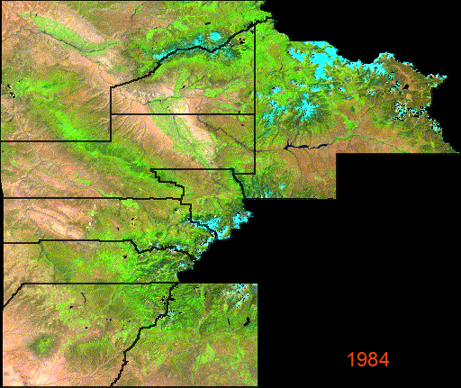
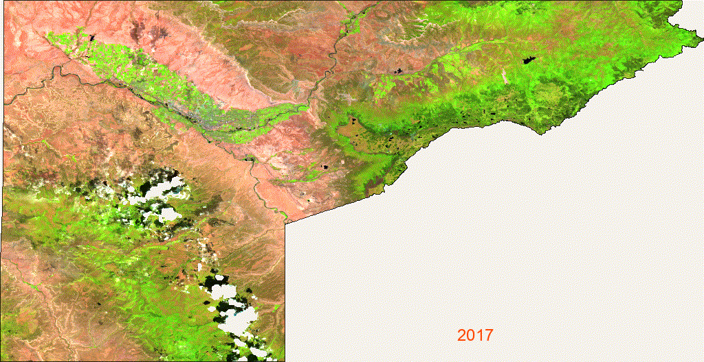

Discovery Farms · SW Colorado
Drought Conditions
& Landscape Change
An exploration of drought severity, vegetation response, and water availability across SW Colorado's agricultural watersheds — from 1984 to present. Produced in collaboration with Discovery Farms, an agricultural research organization with sites in Grand Valley and SW Colorado.
Drought Conditions
Year-by-Year Drought Conditions
Step through peak-summer (August) drought conditions across SW Colorado from 2000 to present. Drag the slider or use arrow keys to explore how drought severity has varied year to year.
August 2000 — USDM peak drought classification
Landscape Change
Seeing Change from Space
Annual peak-season satellite imagery reveals how the landscape has responded to drought cycles over four decades. False color composites highlight vegetation health and moisture stress — green indicates healthy vegetation, brown indicates stress or bare soil.

SW Colorado region — Landsat false color, 1984–present. SWIR/NIR/Red composite, annual peak-season (June–October) median.

Grand Valley closeup — Sentinel-2 at 10m resolution, 2017–present. Shows irrigation patterns and crop-level moisture stress.
Drought Trends
How Has Drought Changed Over Time?
Two complementary views of drought history across the SW Colorado region — a long-term moisture index spanning nearly seven decades, and a modern record of severe drought frequency since 2000.

Palmer Drought Severity Index (PDSI) — annual mean across SW Colorado, 1958–present. Negative values indicate drier than average conditions.

Percentage of SW Colorado in D2 (Severe) or worse drought each August, 2000–present.
Methods
Data & Approach
All analysis was conducted using Google Earth Engine and Python. Data sources and methods are summarized below.
Data Sources & Methods
- USDM drought maps — weekly classifications, D0–D4, 2000–present (NDMC/NOAA/USDA)
- TerraClimate PDSI — monthly Palmer Drought Severity Index, 1958–present (~4km)
- Landsat 5/7/8/9 — harmonized false color composites, June–October, 1984–present (30m)
- Sentinel-2 SR — false color composites, July–August, 2017–present (10m)
- Region: Delta, Dolores, Gunnison, La Plata, Mesa, Montezuma, Montrose, Ouray, San Miguel Counties
- Cloud masking via per-pixel QA band; gap fill using 25th percentile fallback
- Trend lines computed via ordinary least squares linear regression